۱اول از همه
پنل پذیرش جاییه که همهی درخواستهای نوبتِ سایت، تماسهایی که مردم خواستن باهاشون بگیریم، نوبتهای تلفنی و حضوری، پیامکها و مقالههای سایت یکجا جمع میشن. هر کسی توی سایت درخواست نوبت بده، چند ثانیه بعد همینجا میبینیدش، بهش زنگ میزنید، روز و ساعت رو هماهنگ میکنید و پنل خودش پیامک تأیید و یادآوری رو براش میفرسته.
نشانی پنل sasan-clinic.ir/panel هست. هم روی کامپیوتر پذیرش کار میکنه، هم روی گوشی؛ فقط کافیه مرورگر (کروم، اج، فایرفاکس یا سافاری) رو باز کنید و این نشانی رو بزنید. بهتره یه بار روی کامپیوتر پذیرش نشانی رو «نشانک» (Bookmark) کنید که هر روز با یه کلیک باز بشه.
یه نکته دربارهی عکسها: عکسهای این راهنما از نسخهی نمایشی پنل گرفته شدن؛ اسمها و شمارهها ساختگیان و ربطی به بیمارهای واقعی ندارن. پنل واقعی شما دقیقاً همین شکلیه، فقط با اطلاعات واقعی.
۲ورود به پنل
وقتی پنل رو باز میکنید، اول صفحهی ورود میاد. سمت راست دو تا جا هست: نام کاربری و رمز. نام کاربری همون اسم انگلیسیایه که موقع ساختن حسابتون گذاشته شده (مثلاً paziresh). رمز رو هم بنویسید و «ادامه» رو بزنید. اگه میخواید ببینید رمز رو درست تایپ کردید، روی آیکن چشم کنار رمز بزنید تا نشون داده بشه.
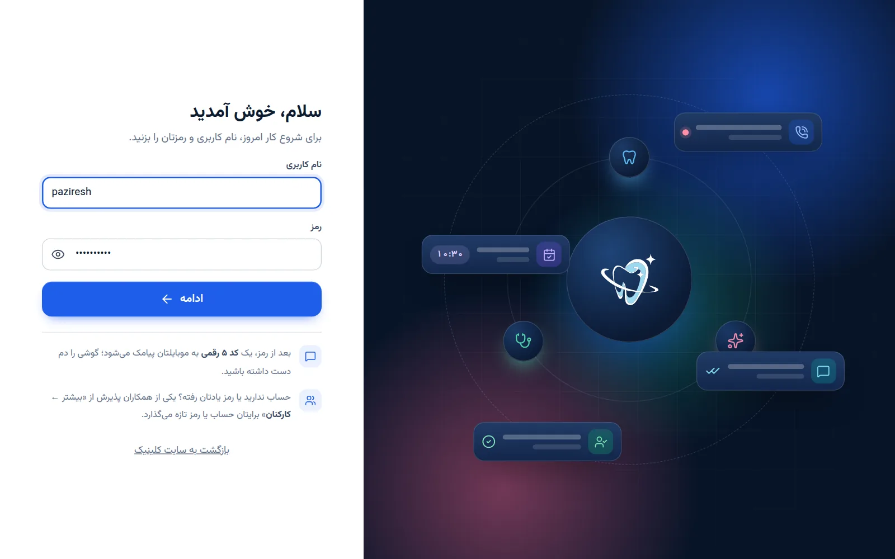
بعد از رمز، یه کد ۵ رقمی به موبایلی که برای حسابتون ثبت شده پیامک میشه. این یعنی اگه کسی رمزتون رو هم بدونه، بدون گوشی شما نمیتونه وارد بشه. پس هر وقت میخواید وارد بشید، گوشیتون دم دستتون باشه.
کد رو توی پنج تا خونه بنویسید؛ لازم نیست دکمهای بزنید، با رقم پنجم خودش وارد میشه. روی گوشی معمولاً خود گوشی کد رو پیشنهاد میده و با یه لمس پر میشه. میتونید کد رو کپی کنید و یکجا بچسبونید، اون هم درست کار میکنه.
هر کد ۲ دقیقه اعتبار داره و فقط یه بار به کار میاد. زیر خونهها یه شمارش معکوس میبینید؛ اگه پیامک نرسید، صبر کنید شمارش تموم بشه و بعد «ارسال دوباره» رو بزنید. اگه کد رو اشتباه بزنید، پنل میگه چند بار دیگه فرصت دارید؛ بعد از ۵ بار اشتباه باید از اول رمز رو بزنید. اگه هم خواستید با یه حساب دیگه وارد بشید، «برگشت و ورود با حساب دیگر» رو بزنید.
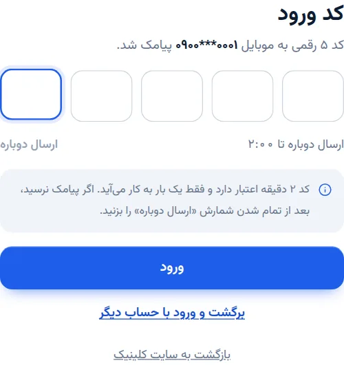
حواستون باشه: اگه ۵ بار پشت هم رمز رو اشتباه بزنید، ورود با اون حساب ۱۵ دقیقه بسته میشه. این برای اینه که کسی نتونه با حدس زدن رمز وارد بشه. ۱۵ دقیقه صبر کنید یا از یه همکار بخواید از بخش «کارکنان» براتون رمز تازه بذاره.
وقتی وارد شدید، تا وقتی با پنل کار میکنید بیرون نمیافتید. ولی اگه ۴ ساعت هیچ کاری نکنید، یا ۱۲ ساعت از ورودتون بگذره، برای امنیت خودش خارجتون میکنه و دوباره باید رمز و کد بزنید.
۳اولین ورود و رمز خودتون
وقتی یکی از همکارها براتون حساب میسازه، یه رمز موقت بهتون میده. بار اول که با اون رمز وارد بشید، پنل قبل از هر کاری ازتون میخواد یه رمز تازه بذارید که فقط خودتون بدونید. توی اون پنجره اول رمز موقت، بعد رمز تازه و بعد دوباره همون رمز تازه رو مینویسید و «ذخیرهی رمز» رو میزنید.
رمز تازه باید دستکم ۸ حرف باشه، هم حرف داشته باشه هم عدد، و شبیه نام کاربریتون نباشه. رمزهای خیلی ساده مثل 12345678 رو قبول نمیکنه. یه رمز خوب مثلاً ترکیبی از یه کلمهی انگلیسی که فقط خودتون یادتون میمونه و چند تا عدده.
بعداً هم هر وقت خواستید رمزتون رو عوض کنید، از منوی حساب (دایرهی اسمتون بالای صفحه) «تغییر رمز» رو بزنید؛ همین پنجره باز میشه، فقط اینبار بهجای رمز موقت، رمز فعلیتون رو میپرسه.
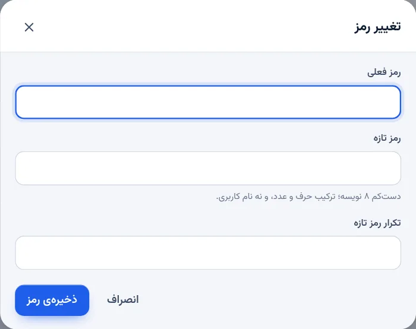
۴نگاه کلی به پنل
بالای همهی صفحهها یه نوار سرمهای هست که همیشه همونجا میمونه. از راست به چپ اینها رو داره:
زبانهها: «پیشخوان»، «درخواستها»، «تقویم» و «تماسها» چهار تا صفحهی اصلیان که بیشتر روز باهاشون سروکار دارید. زبانهای که الان توش هستید پسزمینهی روشنتری داره. اون عدد قرمز کنار «درخواستها» و «تماسها» یعنی چند تا مورد تازه منتظر شماست؛ وقتی به همه رسیدگی کنید، عدد خودش غیب میشه.
«بیشتر»: بقیهی صفحهها اینجان: مقالهها، مخاطبان، پیامک، کارکنان، آمار بازدید و گزارش کارها. روش بزنید تا فهرستشون باز بشه.
جستوجو: توی این کادر اسم بیمار، شمارهی موبایلش یا کد پیگیری (مثل SS-12345) رو بنویسید؛ همهی درخواستها رو میگرده و نتیجه رو توی صفحهی درخواستها نشون میده. با زدن کلید / روی صفحهکلید هم مستقیم میرید توی این کادر.
«نوبت تازه»: دکمهی آبی؛ برای وقتی که کسی زنگ زده یا حضوری اومده و میخواید براش نوبت ثبت کنید. توضیح کاملش اینجاست.
دایرهی اسم شما: منوی حسابتونه، با «تغییر رمز» و «خروج از پنل».
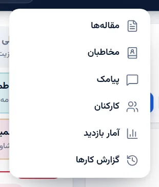
پنل خودش هر ۳۰ ثانیه تازه میشه؛ لازم نیست صفحه رو دوباره بارگیری کنید. هر وقت یه درخواست تازه از سایت برسه، پایین صفحه یه پیام کوچیک میآد (مثلاً «درخواست تازه: آرش فرهادی · دندانپزشکی»)، عدد قرمز زبانه یکی بیشتر میشه و کارت اون درخواست یه لحظه میدرخشه که چشمتون بهش بیفته.
اگه اینترنت قطع بشه یا سرور در دسترس نباشه، بالای صفحه یه نشان «اتصال قطع است» ظاهر میشه. تا وقتی این نشان هست، کاری که میکنید ذخیره نمیشه؛ صبر کنید اینترنت وصل بشه، نشان خودش میره.
پیامهای کوچیک پایین صفحه: بعد از هر کاری (مثلاً «تماس گرفتم»)، یه پیام کوتاه تأیید میآد. خیلی از این پیامها یه دکمهی «برگرداندن» دارن؛ اگه اشتباهی دکمهای رو زدید، تا چند ثانیه با همین دکمه کارتون برمیگرده، انگار اصلاً نزدید.
۵پیشخوان
پیشخوان اولین صفحهایه که بعد از ورود میبینید و قراره توی یه نگاه بهتون بگه «الان چی کار باید کرد». بالاش یه کادر سرمهای هست که یه سلام و یه جملهی خلاصه داره، مثل «۶ نفر منتظر تماساند و امروز ۵ نوبت داریم؛ ۱ نفر همین حالا در کلینیک است». کنارش یه حلقه هست که نشون میده از نوبتهای امروز چند تاش انجام شده.
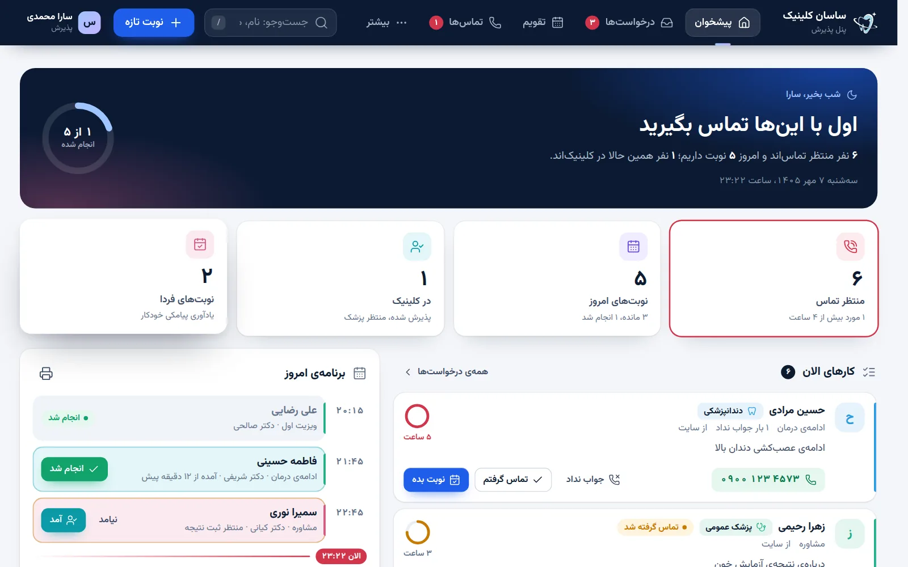
زیرش چهار تا کارت عدد هست: منتظر تماس (درخواستهایی که هنوز باهاشون تماس نگرفتید)، نوبتهای امروز، در کلینیک (کسایی که اومدن و هنوز کارشون تموم نشده) و نوبتهای فردا. روی هر کدوم بزنید، مستقیم به همون فهرست میرید.
کارهای الان
این مهمترین قسمت پیشخوانه. همهی کسایی که باید بهشون زنگ بزنید اینجا یه صف شدن: درخواستهای نوبتِ سایت، نوبتهای تلفنیای که هنوز روز و ساعت ندارن و کسایی که فرم «با من تماس بگیرید» رو پر کردن. قدیمیترین همیشه بالاست، پس از بالا شروع کنید.
روی هر کارت اسم، بخش (با رنگش)، نوع مراجعه، توضیحی که بیمار نوشته و شمارهش هست. اون حلقهی کوچیک کنار کارت نشون میده چقدر منتظر مونده؛ سبز یعنی تازهست، نارنجی یعنی بیشتر از نیم ساعته و قرمز یعنی بیشتر از ۴ ساعته منتظره و باید زودتر بهش رسید.
دکمههای پایین هر کارت:
- شمارهی سبز: روی گوشی مستقیم زنگ میزنه؛ روی کامپیوتر شماره رو نشون میده که با تلفن کلینیک بگیرید.
- جواب نداد: اگه زنگ زدید و جواب نداد. پنل میشمره چند بار جواب نداده («۲ بار جواب نداد») و کارت توی صف میمونه که بعداً دوباره زنگ بزنید.
- تماس گرفتم: اگه حرف زدید ولی هنوز روز و ساعت قطعی نشده.
- نوبت بده: مستقیم کشوی همون درخواست رو با انتخاب روز و ساعت باز میکنه.
برای درخواستهای تماس هم «تماس گرفتم» و «انجام شد» هست. روی خود کارت (نه دکمهها) بزنید تا همهی جزئیات باز بشه.
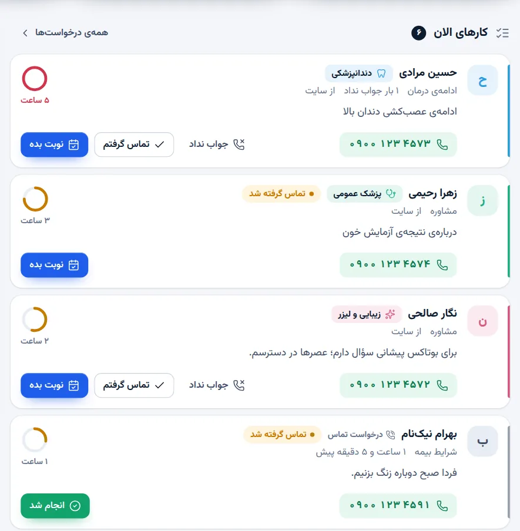
برنامهی امروز
سمت دیگهی پیشخوان، نوبتهای امروز به ترتیب ساعت چیده شدن و یه خط قرمز با ساعت فعلی («الان») نشون میده کجای روز هستیم.
وقتی بیمار رسید، دکمهی «آمد» رو بزنید؛ کارتش سبز میشه و میره توی «در کلینیک». وقتی کارش تموم شد، «انجام شد» رو بزنید. اگه ۲۰ دقیقه از ساعت نوبت کسی گذشته باشه و هنوز نیومده باشه، دکمهی «نیامد» هم کنار «آمد» ظاهر میشه.
زیر برنامهی امروز، فهرست نوبتهای فردا هست که بدونید فردا چه خبره. با دکمهی چاپ بالای همین قسمت، برنامهی روز رو میتونید برای پزشک یا اتاق درمان چاپ کنید.
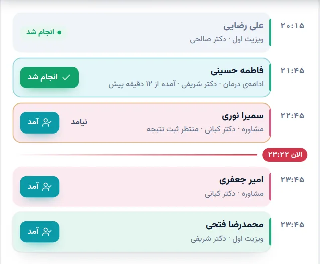
۶یه درخواست، از اول تا آخر
روی هر درخواستی (توی پیشخوان، صفحهی درخواستها یا تقویم) بزنید، یه کشو از کنار صفحه باز میشه که همهچیزِ اون بیمار توشه. بالای کشو یه مسیر پنجقدمی هست: ثبت ← تماس ← نوبت ← آمد ← انجام. قدمی که الان توش هستید پررنگه و پنل فقط دکمههای همون قدم رو نشونتون میده که گیج نشید. برای بستن کشو ضربدر بالا رو بزنید، یا بیرونِ کشو کلیک کنید، یا Esc رو بزنید.
قدم اول: منتظر تماس
درخواستی که تازه از سایت رسیده این شکلیه. شمارهی بیمار بزرگ نوشته شده که راحت بگیرید. بعد از تماس یکی از اینها رو بزنید:
- تماس گرفتم: حرف زدید و قراره روز و ساعت رو هماهنگ کنید.
- جواب نداد: شمرده میشه و درخواست منتظر میمونه.
- همین حالا نوبت بده: اگه همون پشت تلفن روز و ساعت رو قطعی کردید، مستقیم برید سراغ انتخاب زمان.
- لغو درخواست: اگه بیمار منصرف شد. قبلش یه بار ازتون میپرسه که مطمئنید.
پایینترِ کشو اطلاعات بیمار هست: توضیحی که خودش توی سایت نوشته (کادر زرد)، موبایل (با دکمهی کپی)، بخش، نوع مراجعه، چند بار جواب نداده و کِی درخواست داده.
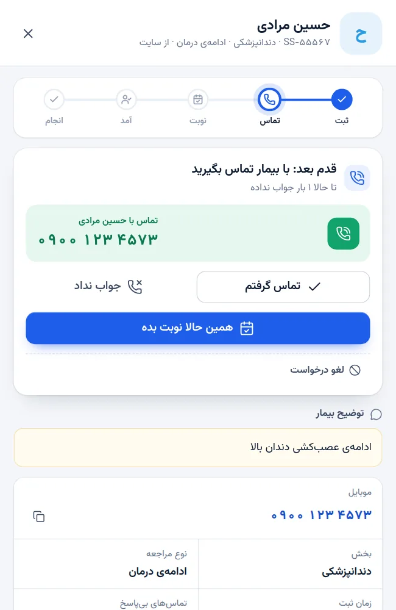
قدم دوم: دادن نوبت
بعد از «تماس گرفتم» (یا با «نوبت بده»)، قسمت انتخاب زمان همونجا توی کشو باز میشه:
- پزشک: اگه بیمار پزشک خاصی میخواد انتخابش کنید؛ وگرنه «هر پزشکی» بمونه.
- روز: نوار ۲۸ روز آینده. روزهایی که اون بخش تعطیله یا ساعت کاریش تموم شده خاکستری و غیرفعالن. نقطهی زیر یه روز یعنی اون روز نوبت دیگهای هم هست.
- ساعت: ساعتها گروهبندی شدن (بامداد، صبح، بعدازظهر، عصر و شب). ساعتی که قبلاً پر شده خطخوردهست و نمیشه انتخابش کرد.
- پیامک تأیید: اگه تیکش خورده باشه، بیمار یه پیامک با روز، ساعت و بخش نوبتش میگیره. معمولاً بذارید تیک بمونه.
آخر سر «ثبت نوبت» رو بزنید. تا روز و ساعت رو انتخاب نکنید این دکمه کمرنگه.
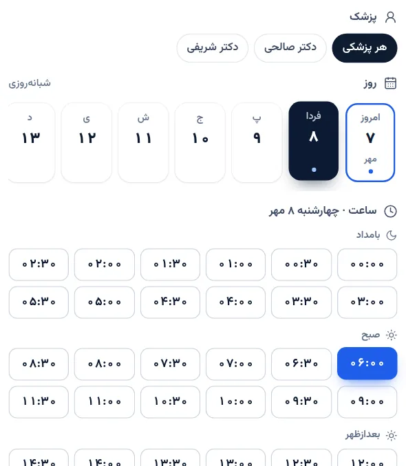
قدم سوم و چهارم: نوبت دارد، آمد، انجام شد
درخواستی که نوبت گرفته، بالای کشوش یه «بلیت نوبت» داره با روز و ساعت و پزشک. دکمههاش:
- آمد: وقتی بیمار رسید.
- تغییر زمان: اگه بیمار خواست روز یا ساعت رو عوض کنه؛ دوباره همون انتخاب زمان باز میشه و اگه تیک پیامک رو بزنید، پیامک زمان تازه براش میره. یادآوری فردا هم خودش با زمان تازه تنظیم میشه.
- نیامد: اگه نیومد.
- پیامک تأیید دوباره: اگه بیمار گفت پیامک به دستش نرسیده.
- لغو نوبت: با پرسیدن دوباره.
وقتی بیمار «در کلینیک» بود، فقط یه دکمهی سبز بزرگ هست: «درمان انجام شد». با زدنش پروندهی این درخواست بسته میشه.
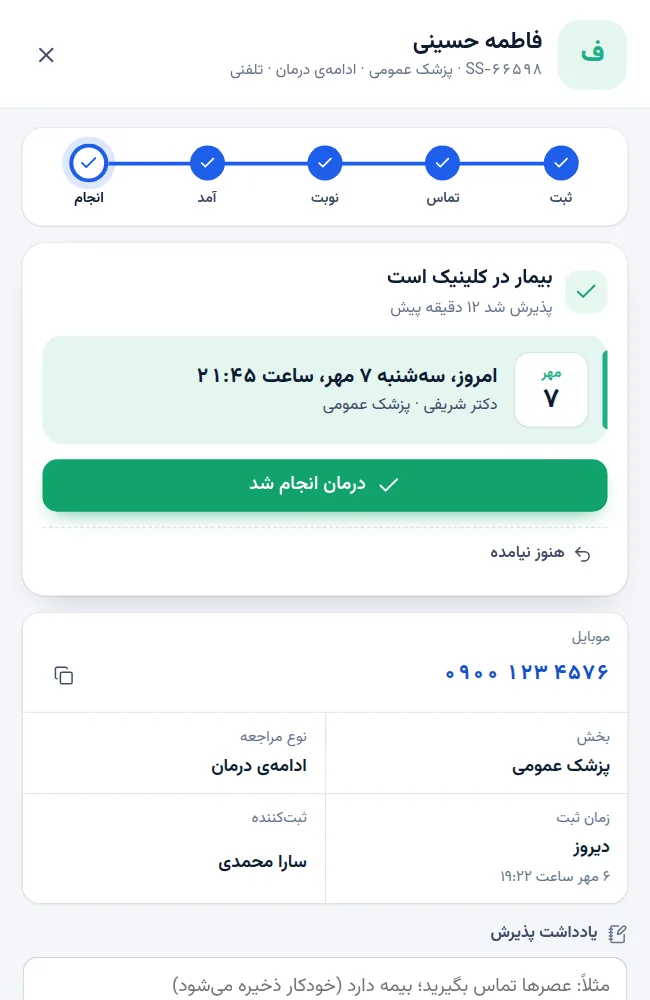
یادداشت پذیرش، پیامکها و تاریخچه
پایین هر کشو یه کادر «یادداشت پذیرش» هست؛ هر چیزی که همکارتون باید بدونه رو بنویسید، مثلاً «عصرها تماس بگیرید» یا «بیمهی تکمیلی داره». لازم نیست دکمهای بزنید؛ همین که از کادر بیرون بیاید (یا Ctrl+Enter بزنید) خودش ذخیره میشه و یه «ذخیره شد» کوچیک نشون میده.
اگه این شماره قبلاً هم پرونده داشته، زیر اطلاعات بیمار نوشته میشه «این شماره ۲ پروندهی دیگر هم دارد» و میتونید بازشون کنید.
پیامکها: همهی پیامکهایی که برای این بیمار رفته، با وضعیت رسیدنش («رسید»، «به گوشی نرسید»، …). اگه وضعیت هنوز نیومده، «بهروزرسانی وضعیت رسیدن» رو بزنید.
تاریخچهی کارها: هر کاری روی این درخواست شده، با اسم کسی که انجامش داده و ساعتش. اگه بعداً سؤال پیش اومد که «کی به این بیمار زنگ زده بود؟»، جوابش اینجاست.
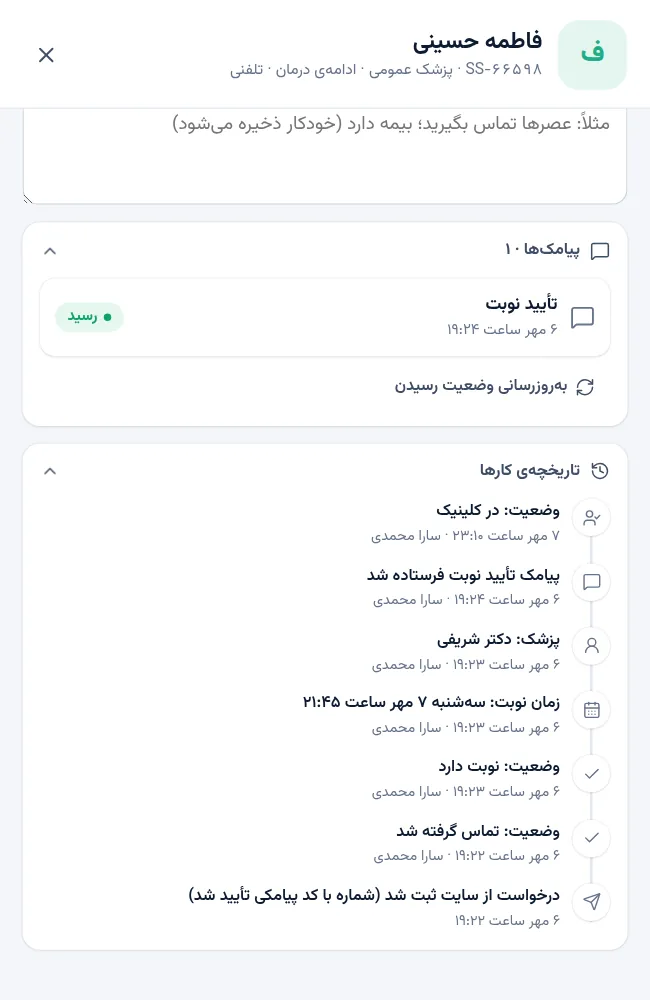
اگه دو نفر همزمان یه درخواست رو تغییر بدن: مثلاً شما و همکارتون همزمان روی یه بیمار کار کنید. پنل نمیذاره کار یکیتون بیصدا روی کار اون یکی نوشته بشه؛ پیام میده که «همکارتان همین حالا این مورد را تغییر داد» و نسخهی تازه رو نشونتون میده. یه نگاه بندازید و اگه لازم بود دوباره تصمیم بگیرید.
۷صفحهی درخواستها
اینجا همهی درخواستها هست، هم اونایی که از سایت اومدن و هم نوبتهای تلفنی. بالای صفحه دکمههای وضعیت رو دارید: منتظر پیگیری (هنوز نوبت نگرفتن)، نوبت دارند، انجام شد، لغو و نیامد و همه. عدد کنار هر کدوم میگه چند تا توشه. کنارش هم میتونید فقط یه بخش (دندانپزشکی، زیبایی و لیزر، پزشک عمومی) رو ببینید.
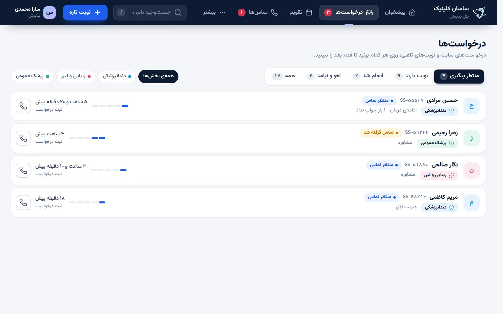
هر ردیف یه بیماره: اسم، کد پیگیری، وضعیت (با رنگ)، بخش، نوع مراجعه، و سمت چپ مسیر پنجقدمیش و اینکه کِی درخواست داده. روی ردیف بزنید تا کشوش باز بشه. برای پیدا کردن یه نفر، اسمش، بخشی از شمارهش یا کد پیگیریش رو توی جستوجوی بالای صفحه بنویسید؛ جستوجو همیشه توی همهی درخواستها میگرده، فرقی نمیکنه کدوم دکمهی وضعیت فعاله. با «پاک کردن» هم فهرست کامل برمیگرده.
۸نوبت تازه (تلفنی یا حضوری)
وقتی کسی زنگ میزنه یا حضوری میاد پذیرش، با دکمهی آبی «نوبت تازه» بالای صفحه (یا کلید N، یا روی گوشی دکمهی گرد + پایین صفحه) براش نوبت ثبت کنید. سه قدم کوتاهه و بالای پنجره نشون میده کجای کار هستید.
قدم ۱: بیمار
اسم و موبایل بیمار رو بنویسید؛ اگه توضیحی هم داره (مثلاً «درد دندان از دیروز»)، توی کادر توضیح بنویسید. اگه این شماره قبلاً توی کلینیک پرونده داشته باشه، همون لحظه یه نوار آبی نشون میده که «این شماره ۱ پرونده دارد» با آخرین مراجعهش؛ اینجوری میفهمید بیمار قدیمیه.
شمارهی نوبت تلفنی با پیامک تأیید نمیشه (بیمار که کد نمیگیره)، پس شماره رو با دقت بنویسید و یه بار براش بخونید.
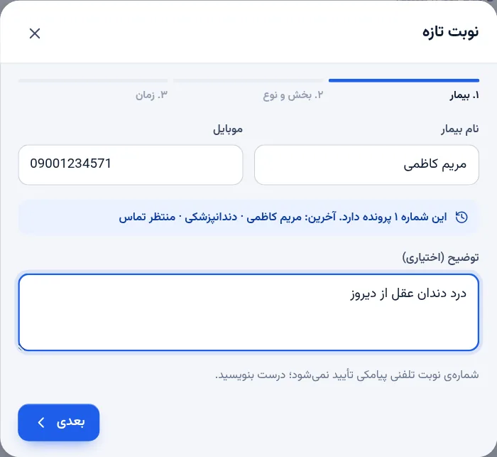
قدم ۲: بخش و نوع مراجعه
بخش (دندانپزشکی، زیبایی و لیزر یا پزشک عمومی) رو انتخاب کنید و بعد نوع مراجعه رو: ویزیت اول برای بار اول، ادامهی درمان برای جلسههای بعدی، و مشاوره. با «قبلی» هم هر وقت خواستید به قدم قبل برمیگردید و چیزی که نوشتید پاک نمیشه.
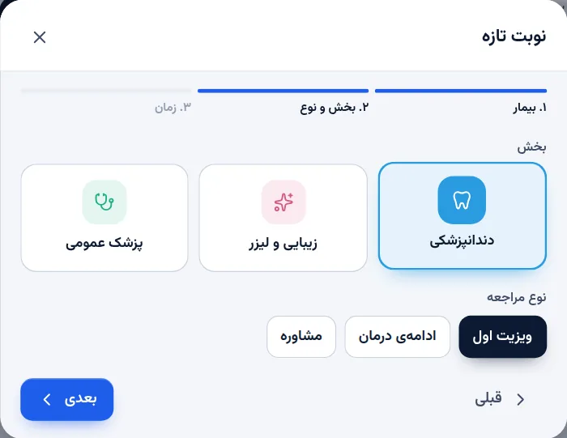
قدم ۳: زمان
اینجا سه تا راه دارید:
- روز و ساعت نوبت را همین حالا انتخاب میکنم: همون انتخاب پزشک، روز و ساعت و تیک پیامک تأیید که توی کشو دیدید. نوبت همین الان ثبت میشه.
- همین حالا در کلینیک است: برای کسی که بدون نوبت قبلی اومده و الان جلوی پذیرشه. با ساعت همین حالا ثبت میشه و مستقیم میره توی «در کلینیک».
- بعداً هماهنگ میکنم: اگه هنوز روز و ساعت معلوم نیست. درخواست با وضعیت «تماس گرفته شد» توی صف پیگیری میمونه تا بعداً بهش نوبت بدید.
«ثبت» رو بزنید؛ پنجره بسته میشه و کشوی همین بیمار باز میشه که ببینید همهچیز درست ثبت شده.
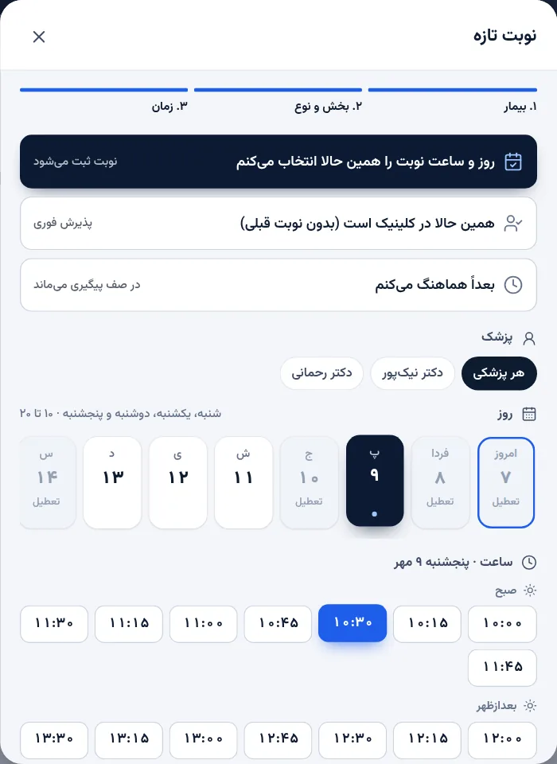
۹تقویم نوبتها
تقویم، نوبتهای یه هفته (شنبه تا جمعه) رو کنار هم نشون میده. امروز با کادر آبی مشخصه. با فلشهای بالای صفحه هفتهی قبل و بعد رو میبینید و «این هفته» برتون میگردونه به هفتهی جاری. زیر اسم هر روز نوشته چند تا نوبت داره.
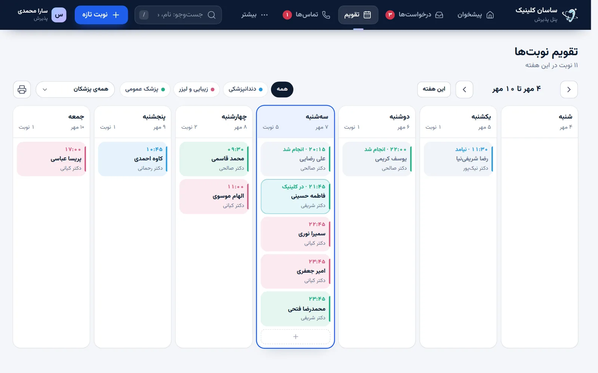
هر نوبت یه کارت کوچیکه با ساعت، اسم بیمار و پزشک؛ رنگش هم بخش رو نشون میده. روی هر کارت بزنید، کشوی همون بیمار باز میشه. روزهایی که یه بخش تعطیله (مثلاً دندانپزشکی که فقط شنبه، یکشنبه، دوشنبه و پنجشنبهست) هاشورخوردهان. با دکمهی + پایین هر روز، مستقیم برای همون روز نوبت تازه ثبت میکنید.
بالای تقویم میتونید فقط یه بخش رو ببینید، یا از کادر «همهی پزشکان» فقط نوبتهای یه پزشک. با دکمهی چاپ هم برنامهی هفته چاپ میشه؛ مثلاً برای اینکه پزشک برنامهی هفتهش رو داشته باشه.
۱۰درخواستهای تماس
توی سایت یه فرم «با من تماس بگیرید» هست؛ کسایی که هنوز نمیدونن نوبت میخوان یا سؤالی دربارهی بیمه و هزینه دارن اون رو پر میکنن. همهی این درخواستها میان توی زبانهی «تماسها» (و توی «کارهای الان» پیشخوان).
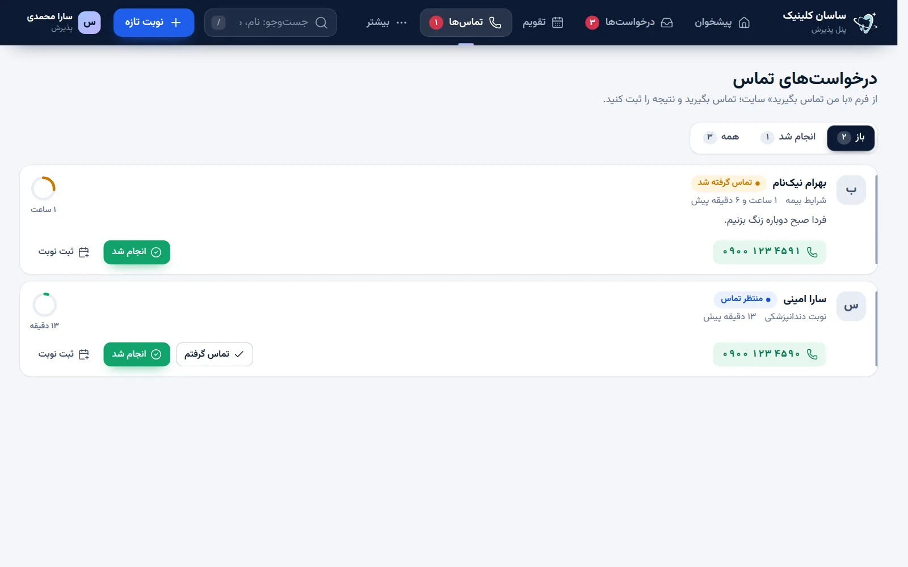
روی هر کارت اسم، موضوعی که نوشته (مثلاً «شرایط بیمه») و زمان درخواست هست. زنگ بزنید و بعد:
- تماس گرفتم: حرف زدید ولی هنوز کار داره (مثلاً قراره دوباره زنگ بزنید).
- انجام شد: کارش تموم شد؛ از فهرست «باز» میره بیرون.
- ثبت نوبت: اگه طرف نوبت خواست؛ پنجرهی نوبت تازه با اسم و شمارهی خودش باز میشه و بعد از ثبت نوبت، این درخواست تماس خودش «انجام شد» میشه.
روی کارت بزنید تا پنجرهش باز بشه؛ اونجا یه کادر یادداشت هم هست که نتیجهی تماس رو بنویسید و با «ذخیرهی یادداشت» نگه دارید.
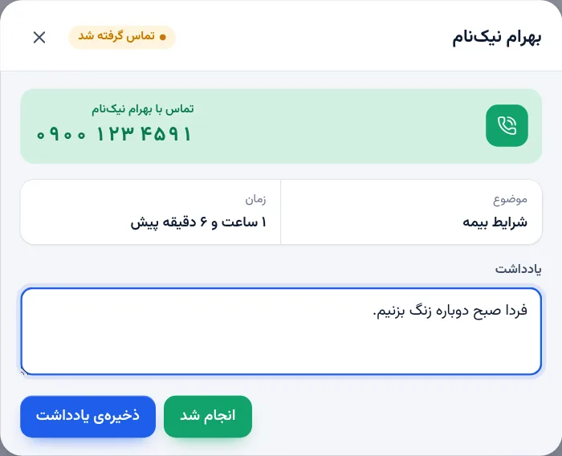
۱۱مخاطبان
«بیشتر ← مخاطبان» دفترچهتلفن خودکار کلینیکه. هر کسی که یه بار شمارهش رو به سایت یا پذیرش داده، خودش اینجا اضافه میشه؛ لازم نیست شما کاری بکنید. یعنی:
- کسی که توی سایت کد تأیید گرفته، حتی اگه وسط کار پشیمون شده و نوبت رو تموم نکرده؛
- کسی که درخواست نوبت داده؛
- کسی که فرم «با من تماس بگیرید» رو پر کرده؛
- و کسی که شما براش نوبت تلفنی یا حضوری ثبت کردید.
کد ورود خود کارکنان به پنل اینجا نمیاد. این فهرست برای وقتیه که میخواید به مردم یه خبر بدید، مثلاً تغییر ساعت کاری، تعطیلیها یا یه خدمت تازه.
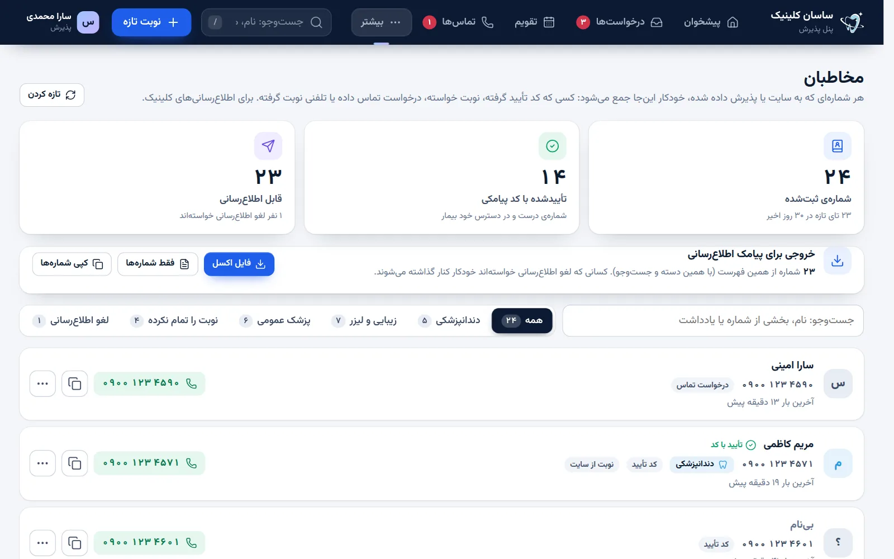
بالای صفحه سه تا عدد هست: کل شمارهها (و اینکه چند تاش توی ۳۰ روز اخیر اضافه شده)، تأییدشده با کد پیامکی (یعنی مطمئنیم شماره مال خود همون آدمه) و قابل اطلاعرسانی (همه، منهای کسایی که گفتن پیامک نمیخوان).
هر ردیف یه شمارهست: اسمی که آخرین بار داده (اگه اسم نداده، «بینام»)، تیک سبز «تأیید با کد»، بخشهایی که درخواست داده، از کجا اومده («کد تأیید»، «نوبت از سایت»، «درخواست تماس»، «نوبت تلفنی»؛ اگه چند بار بوده، کنارش ×۲ و …) و آخرین باری که دیده شده. سمت چپ هم دکمهی تماس، کپی شماره و منوی «…» هست.
جستوجو و دستهها
توی کادر جستوجو اسم، بخشی از شماره (فارسی یا انگلیسی، با فاصله یا بیفاصله فرقی نمیکنه) یا یه کلمه از یادداشت رو بنویسید. دکمههای کنارش فهرست رو دستهبندی میکنن: همه، هر کدوم از بخشها، نوبت را تمام نکرده و لغو اطلاعرسانی.
دستهی «نوبت را تمام نکرده» خیلی به درد میخوره: کساییان که توی سایت کد گرفتن ولی درخواستشون رو ثبت نکردن. احتمالاً وسط کار گیر کردن یا پشیمون شدن؛ یه تماس کوتاه باهاشون ممکنه یه نوبت بشه.
اگه شمارهها زیاد بشن، فهرست ۶۰ تا ۶۰ تا نشون داده میشه؛ پایین فهرست «نمایش ۶۰ شمارهی دیگر» رو بزنید.
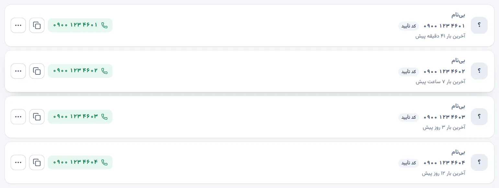
گرفتن خروجی برای پیامک اطلاعرسانی
کارت «خروجی برای پیامک اطلاعرسانی» همیشه از همون فهرستی که الان روی صفحهست خروجی میگیره. یعنی اگه دستهی «زیبایی و لیزر» رو زده باشید، فقط شمارههای بخش زیبایی؛ اگه چیزی جستوجو کرده باشید، فقط نتیجهی همون جستوجو. عدد پررنگ توی کارت میگه چند تا شماره توی خروجی میاد. کسایی که «لغو اطلاعرسانی» خواستن خودکار کنار گذاشته میشن. سه جور خروجی دارید:
- فایل اکسل: یه فایل با موبایل، نام، بخشها، از کجا، تأیید با کد، اولین و آخرین بار، دفعات و یادداشت. با اکسل درست باز میشه (فارسیش بههم نمیریزه و صفر اول شمارهها هم نمیافته).
- فقط شمارهها: یه فایل متنی که هر خط یه شمارهست؛ برای بارگذاری توی قسمت «ارسال انبوه» پنل sms.ir دقیقاً همین فایل رو میخواید.
- کپی شمارهها: همهی شمارهها رو (هر کدوم یه خط) کپی میکنه که جایی بچسبونید.
پیامک اطلاعرسانی رو از کجا بفرستیم؟ پنل پذیرش خودش پیامک گروهی نمیفرسته (که یه وقت اشتباهی برای هزار نفر پیامک نره). فایل «فقط شمارهها» رو بگیرید و توی پنل sms.ir، قسمت ارسال انبوه، بارگذاری کنید. طبق قانون مخابرات، پیامک تبلیغاتی باید آخرش عبارت «لغو۱۱» داشته باشه. هر خروجیای که بگیرید با تعدادش توی «گزارش کارها» ثبت میشه.
منوی «…» هر شماره
- نام و یادداشت: اسم رو درست کنید یا یادداشت بذارید (مثلاً «فقط عصرها جواب میدهد»). توی همین پنجره میبینید این شماره از کجا اومده، چند بار و اولین و آخرین بار کِی بوده.
- لغو اطلاعرسانی: اگه خود بیمار گفت پیامک خبری و تبلیغی نمیخواد، این رو بزنید. ردیفش کمرنگ میشه و دیگه توی هیچ خروجیای نمیاد. پیامکهای نوبت خودش (تأیید و یادآوری) مثل قبل میرسه. اگه اشتباهی زدید، «برگرداندن» توی پیام پایین صفحه، یا از همین منو «برگرداندن به اطلاعرسانی».
- پاک کردن از مخاطبان: شماره کامل پاک میشه (با پرسیدن دوباره). اگه اون آدم بعداً دوباره به سایت شماره بده، دوباره اضافه میشه.
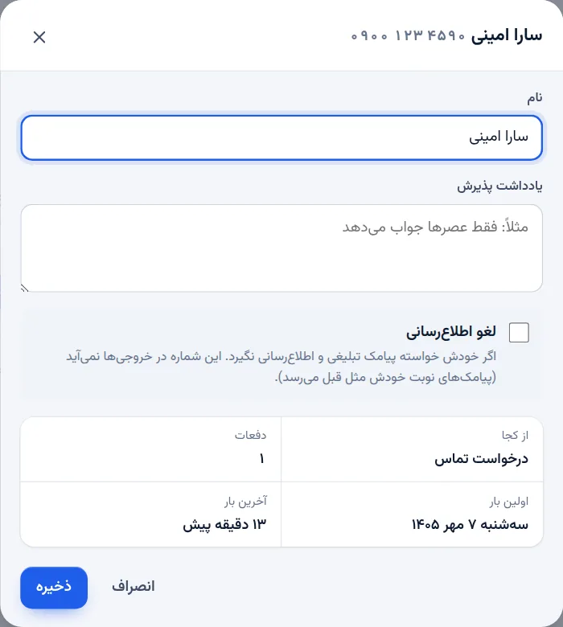
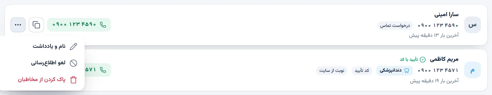
۱۲مقالهها
مقالههای مجلهی سایت (مثل «ایمپلنت یا بریج») رو از «بیشتر ← مقالهها» مینویسید و ویرایش میکنید. هر چی اینجا منتشر کنید، همون لحظه توی سایت دیده میشه: صفحهی خود مقاله، فهرست مقالهها، ردیف مجله توی صفحهی اصلی، کارت مقالههای صفحهی همون بخش و نقشهی سایت برای گوگل.
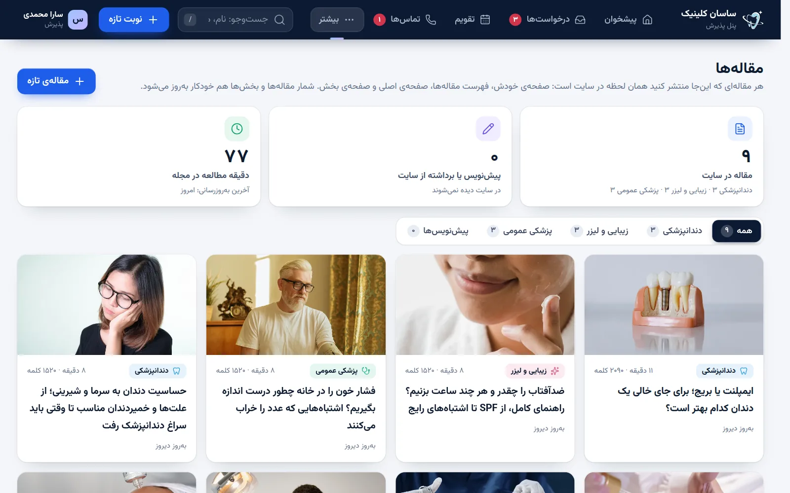
بالای فهرست سه عدد هست (مقالههای توی سایت، پیشنویسها یا برداشتهشدهها، و جمع دقیقههای مطالعه) و دکمههای بخش و «پیشنویسها» برای دستهبندی. روی هر کارت یه برچسب وضعیت هست: «در سایت»، «پیشنویس»، «برداشته از سایت» یا «ویرایششده در پنل». برای نوشتن مقالهی تازه دکمهی آبی «مقالهی تازه» رو بزنید؛ برای ویرایش، روی کارت هر مقاله.
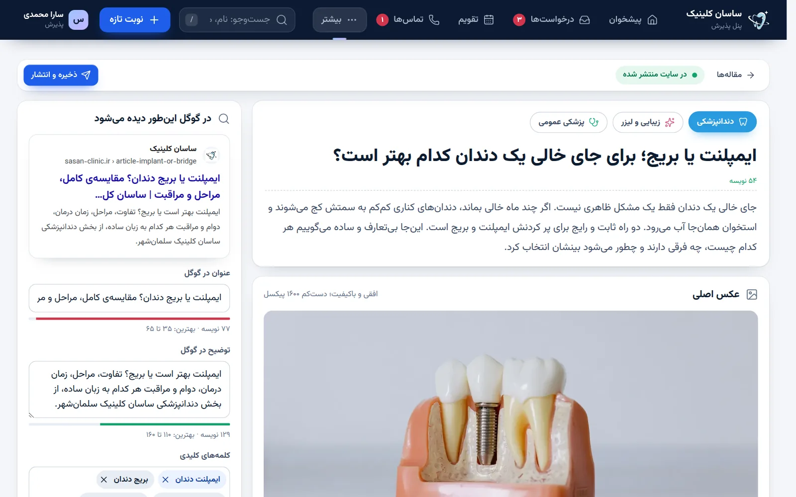
نوشتن متن
بالای ویرایشگر بخش مقاله رو انتخاب میکنید، بعد عنوان و یه مقدمهی کوتاه (دو سه جمله که خواننده بفهمه مقاله دربارهی چیه). بعد عکس اصلی: «انتخاب عکس اصلی» رو بزنید و هر عکسی از کامپیوتر یا گوشی انتخاب کنید؛ پنل خودش اون رو به اندازهی درست (۱۶ به ۹) برش میده و سه اندازه ازش میسازه که سایت روی هر گوشیای سریع باز بشه. زیر عکس یه جمله «توضیح عکس» بنویسید؛ هم برای گوگل خوبه، هم برای کسایی که صفحهخوان دارن.
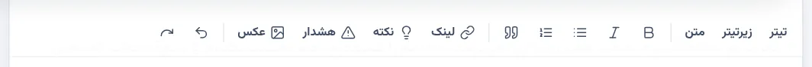
نوار ابزار بالای متن، از راست:
- تیتر و زیرتیتر: متن رو به بخشهای کوتاه تقسیم کنید. تیترها خودکار توی «فهرست مطالب» بالای مقاله توی سایت میان. متن هم یه خط رو برمیگردونه به متن ساده.
- پررنگ و کج (Ctrl+B و Ctrl+I)، فهرست نقطهای و شمارهدار، نقلقول.
- لینک: چند کلمه رو انتخاب کنید و «لینک» رو بزنید؛ از فهرستی که باز میشه یه صفحه یا مقالهی دیگهی سایت رو انتخاب کنید. لینک به صفحههای خود سایت برای گوگل خیلی مهمه.
- نکته و هشدار: یه کادر رنگی برای یه نکتهی مهم یا یه هشدار (مثلاً «اگه تب کردید حتماً به پزشک مراجعه کنید»).
- عکس: یه عکس وسط متن، با توضیح و زیرنویس. عکس بعد از همون پاراگرافی که نشانگر توشه اضافه میشه.
- برگرداندن و دوباره (Ctrl+Z و Ctrl+Y).
اگه متن رو از Word یا Google Docs کپی کنید، فقط ساختارش (تیتر، فهرست، پررنگ) میمونه و رنگ و فونتهای عجیب پاک میشه؛ پس راحت بچسبونید. زیر متن هم دو تا قسمت هست: «خلاصه در چند خط» (چند جملهی کوتاه که بالای مقاله توی یه کادر میاد) و «سؤالهای پرتکرار» (سؤال و جواب؛ گوگل گاهی همینها رو مستقیم توی نتیجهی جستوجو نشون میده).
گوگل و امتیاز سئو
سمت چپ ویرایشگر، «در گوگل اینطور دیده میشود» دقیقاً نشون میده مقاله توی نتیجهی گوگل چه شکلی میاد. زیرش «عنوان در گوگل» و «توضیح در گوگل» رو میتونید جدا بنویسید؛ نوار رنگی زیرشون سبز یعنی طولش خوبه و قرمز یعنی خیلی کوتاه یا بلنده. «کلمههای کلیدی» کلمههاییه که فکر میکنید مردم با اونها جستوجو میکنن (مثلاً «ایمپلنت در سلمانشهر»؛ هر کلمه رو بنویسید و Enter بزنید). «نشانی صفحه» هم با دکمهی «خودکار» از عنوان ساخته میشه و بعد از انتشار دیگه عوض نمیشه.
پایینتر، امتیاز سئو یازده تا چیز رو بررسی میکنه: طول عنوان، کلمهی کلیدی توی عنوان، طول عنوان و توضیح گوگل، اسم سلمانشهر یا متلقو، دستکم ۶۰۰ کلمه، دستکم ۳ تیتر، عکس با توضیح، لینک به صفحهی دیگهی سایت، دستکم ۲ سؤال و خلاصه. هر کدوم که تیک سبز نداره، یه جملهی راهنما زیرش داره که بگه چی کم داره. لازم نیست همهش سبز باشه، ولی هر چی بیشتر، بهتر.
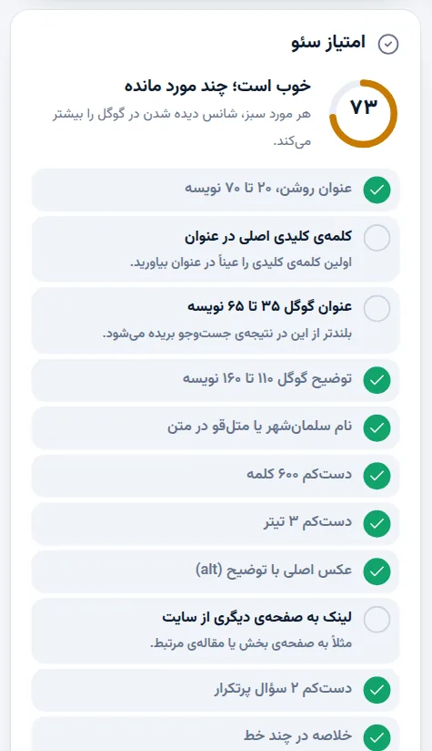
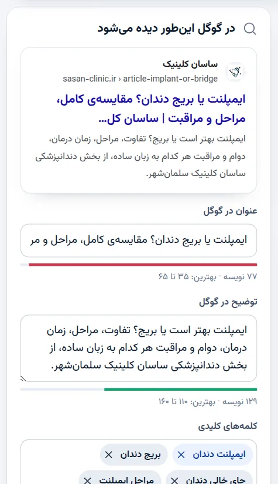
ذخیره، انتشار و بقیهی کارها
- ذخیرهی پیشنویس: ذخیره میشه ولی توی سایت دیده نمیشه؛ برای وقتی که هنوز کار دارید.
- ذخیره و انتشار: همون لحظه توی سایت میاد (یا نسخهی تازه جای قبلی رو میگیره).
- برداشتن از سایت / نمایش دوباره در سایت: مقاله موقتاً از سایت برداشته میشه ولی پاک نمیشه.
- برگرداندن به نسخهی اصلی سایت: فقط برای مقالههایی که از اول توی سایت بودن؛ همهی تغییراتی که توی پنل دادید کنار گذاشته میشه.
- حذف مقاله: فقط برای مقالههایی که توی پنل نوشته شدن؛ با پرسیدن دوباره.
نگران پریدن نوشتهتون نباشید. ویرایشگر هر چند ثانیه نوشتهی ذخیرهنشده رو توی همون مرورگر نگه میداره. اگه برق رفت یا مرورگر بسته شد، دفعهی بعد که مقاله رو باز کنید، بالای ویرایشگر میپرسه «نوشتهی ذخیرهنشدهای مانده است»؛ «بازیابی» رو بزنید. اگه هم با تغییرات ذخیرهنشده بخواید از صفحه برید بیرون، اول ازتون میپرسه.
۱۳پیامک
«بیشتر ← پیامک» همهچیزِ پیامکهای کلینیک رو نشون میده. بالای صفحه سه عدد هست: اعتبار پنل پیامک (مقدار شارژ حساب sms.ir؛ اگه کم شد، حساب رو شارژ کنید)، حالت ارسال («اصلی» یعنی پیامکها واقعاً فرستاده میشن) و تعداد پیامکهای فرستادهشده به بیمارها.
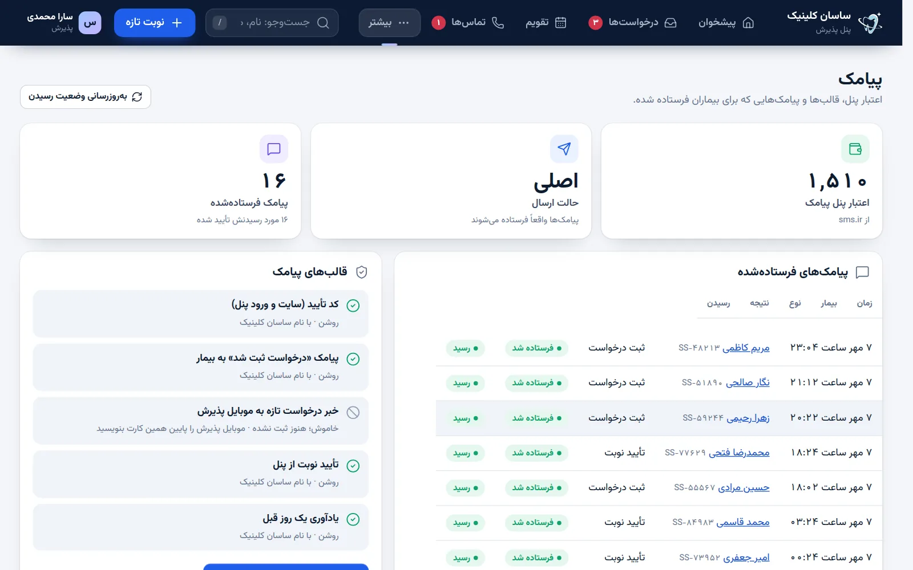
پیامکهای فرستادهشده: هر پیامکی که برای بیمارها رفته، با زمان، اسم بیمار (روش بزنید تا کشوش باز بشه)، نوع («ثبت درخواست»، «تأیید نوبت»، «یادآوری»)، نتیجهی ارسال و وضعیت رسیدن به گوشی. وضعیت رسیدن رو مخابرات چند دقیقه بعد اعلام میکنه؛ با دکمهی «بهروزرسانی وضعیت رسیدن» بالای صفحه تازهش کنید. کد تأیید و ورود هیچوقت توی این فهرست نمیاد.
قالبهای پیامک
پنل پنج جور پیامک میفرسته و متن هر کدوم باید اول به تأیید کارشناسهای sms.ir برسه:
- کد تأیید (برای سایت و ورود به پنل)
- «درخواست ثبت شد» برای بیمار، بعد از درخواست نوبت توی سایت
- خبر درخواست تازه به موبایل پذیرش
- تأیید نوبت وقتی از پنل نوبت میدید
- یادآوری خودکار یه روز قبل از نوبت (هر روز عصر، برای نوبتهای فردا)
کنار هر کدوم وضعیتش نوشته شده: «روشن · با نام ساسان کلینیک»، «در انتظار تأیید sms.ir» یا «رد شد» با دلیلش. اگه قالبی هنوز ثبت نشده یا رد شده، دکمهی «ثبت قالبها با نام کلینیک در sms.ir» رو بزنید. تأیید معمولاً چند ساعت طول میکشه؛ لازم نیست کاری بکنید، پنل هر ۲۰ دقیقه خودش میپرسه و هر قالبی تأیید شد، همون لحظه خودش روشن میشه. اگه عجله دارید، «پرسیدن وضعیت از sms.ir» رو بزنید. با «متن پیامکها» هم میتونید متن کامل همه رو ببینید.
پایین همین کارت، موبایل پذیرش رو بنویسید و «ذخیره» بزنید تا هر وقت کسی توی سایت درخواست نوبت داد، یه پیامک خبر به این شماره بیاد. اگه خالیش کنید و ذخیره کنید، این خبر خاموش میشه.
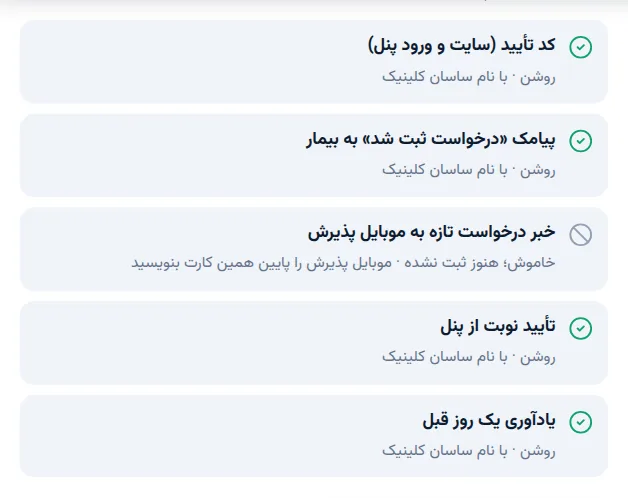
۱۴کارکنان
توی «بیشتر ← کارکنان» همهی حسابهای پنل هست. هر همکار باید حساب خودش رو داشته باشه؛ چون هر کاری توی پنل با اسم همون کسی که انجامش داده ثبت میشه. حساب مشترک نسازید و رمزتون رو به همکارتون ندید. همهی حسابها به همهی قسمتهای پنل دسترسی دارن.
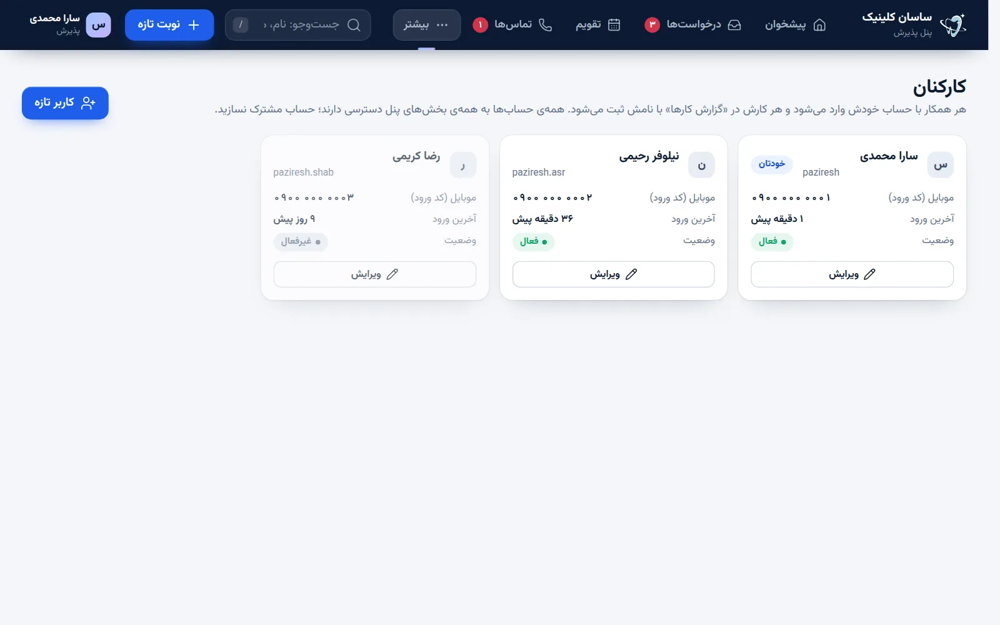
ساختن حساب برای یه همکار تازه
«کاربر تازه» رو بزنید و اینها رو بنویسید:
- نام و نام خانوادگی (همونی که توی گزارشها دیده میشه).
- نام کاربری: با حروف کوچیک انگلیسی، عدد، نقطه یا خط تیره، مثل niloofar. بعداً عوض نمیشه.
- موبایل: کد ورود به همین شماره میره، پس حتماً شمارهی خود همکار باشه.
- رمز موقت: خودتون بنویسید یا روی آیکن کلید بزنید تا یه رمز تصادفی ساخته بشه. قبل از ذخیره یادداشتش کنید.
«ساخت حساب» رو بزنید. رمز موقت رو حضوری یا تلفنی به همکار بدید، نه با پیامک عمومی یا پیامرسان. بار اول که وارد بشه، پنل مجبورش میکنه رمز خودش رو بذاره.
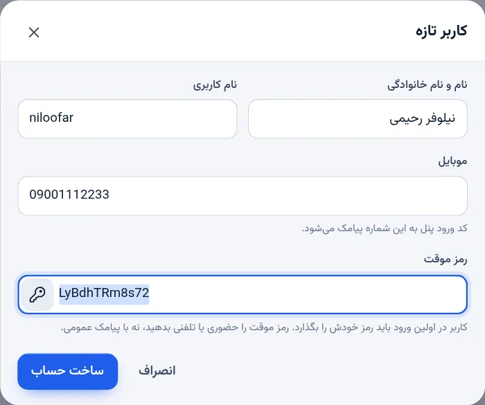
ویرایش: روی «ویرایش» کارت هر همکار بزنید. اسم و موبایلش رو میتونید عوض کنید. اگه رمزش یادش رفته، یه رمز موقت تازه براش بذارید (دفعهی بعد مجبور میشه رمز خودش رو بذاره). اگه همکاری دیگه با کلینیک کار نمیکنه، تیک «حساب فعال است» رو بردارید؛ همون لحظه از پنل بیرون میافته و دیگه نمیتونه وارد بشه، ولی همهی کارهایی که کرده توی گزارشها میمونه. حساب خودتون رو نمیتونید غیرفعال کنید، و رمز خودتون رو هم از منوی حساب عوض میکنید، نه از اینجا.
۱۵آمار بازدید سایت
«بیشتر ← آمار بازدید» نشون میده چند نفر سایت رو دیدن. با دکمههای بالا بازه رو انتخاب کنید: ۷، ۳۰ یا ۹۰ روز. سه عدد بالا تعداد بازدیدکنندهها (و اینکه نسبت به نیمهی اول بازه بیشتر شده یا کمتر)، تعداد صفحههایی که دیده شده و بازدیدکنندههای امروز رو نشون میدن. نمودار، بازدیدکنندههای هر روزه؛ نشانگر رو روی هر ستون ببرید تا عددش رو ببینید.
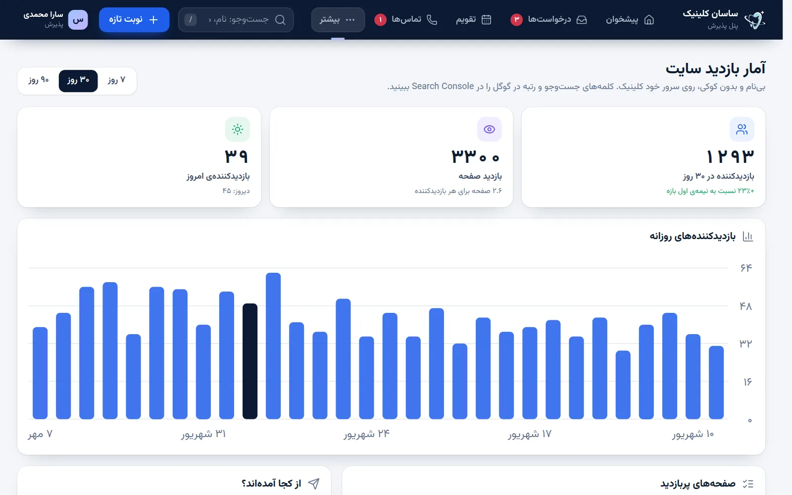
پایینتر «صفحههای پربازدید» (کدوم صفحهها بیشتر خونده میشن)، «از کجا آمدهاند» (گوگل، اینستاگرام، بلد، نشان، مستقیم و …) و نوع دستگاه (گوشی یا کامپیوتر) هست. این آمار بینامه؛ یعنی هیچکس شناسایی نمیشه و کوکی هم گذاشته نمیشه. برای اینکه ببینید مردم با چه کلمههایی توی گوگل سایت رو پیدا میکنن، باید به Google Search Console برید (لینکش پایین همین صفحه هست).
۱۶گزارش کارها
«بیشتر ← گزارش کارها» دفتر همهی کارهای پنله: کی، چه ساعتی، چی کار کرد. ورودها و خروجها، ورودهای ناموفق (با علامت قرمز)، تغییر درخواستها، نوبتهای تلفنی، پیامکها، ساختن و تغییر حسابها، مقالهها، مخاطبان و خروجیها. هر روز جدا گروه شده و تازهترین بالاست. کارهایی که پنل خودش انجام داده (مثل روشن شدن یه قالب پیامک) با اسم «سیستم» نوشته میشن.
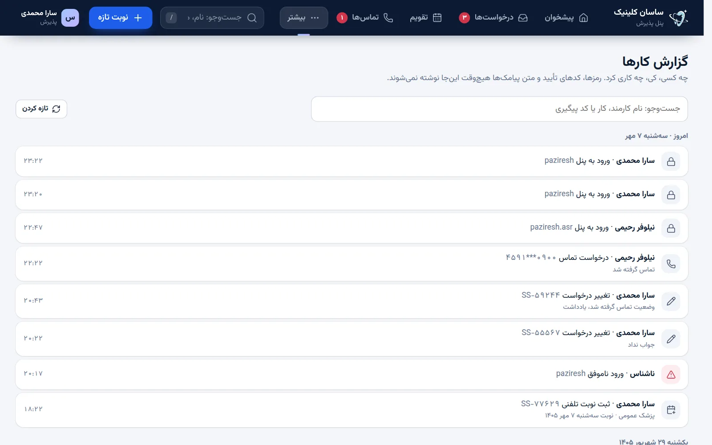
با کادر جستوجو میتونید دنبال اسم یه همکار، یه نوع کار یا کد پیگیری یه درخواست بگردید. «تازه کردن» هم آخرین کارها رو میاره. رمزها، کدهای تأیید و متن پیامکها هیچوقت اینجا نوشته نمیشن، و شمارهی موبایلها هم نصفه (مثل ۰۹۱۲***۴۵۶۷) نشون داده میشه.
اگه یه روز «ورود ناموفق» زیادی با حساب یکی از همکارها دیدید که کار خودش نبوده، یعنی کسی داره رمز رو حدس میزنه. رمز اون حساب رو عوض کنید؛ خیالتون هم راحت باشه که بدون گوشی خود همکار (کد پیامکی) کسی نمیتونه وارد بشه.
۱۷حساب خودتون: تغییر رمز و خروج
بالای صفحه، سمت چپ، دایرهای با حرف اول اسمتون هست. روش بزنید تا منوی حسابتون باز بشه: اسمتون و نام کاربریتون بالاش نوشته شده و دو تا گزینه داره:
- تغییر رمز: رمز فعلی، رمز تازه و تکرارش. بعد از عوض کردن رمز، اگه جای دیگهای (مثلاً روی گوشی) هم وارد شده بودید، از اونجا بیرون میافتید.
- خروج از پنل: هر وقت پشت کامپیوتر پذیرش رو ترک میکنید (مخصوصاً آخر شیفت)، خارج بشید تا نفر بعدی با حساب شما کار نکنه.
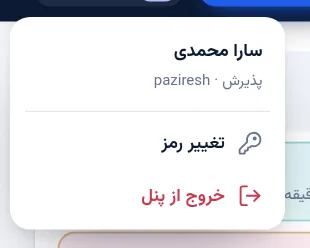
۱۸کار با گوشی
روی گوشی هم پنل همهی کارها رو انجام میده، فقط چیدمانش برای یه دست راحتتره:
- زبانهها پایین صفحهان: پیشخوان، درخواستها، تقویم، تماسها و «بیشتر». منوی حساب (تغییر رمز و خروج) هم ته فهرست «بیشتر» هست.
- دکمهی گرد آبی + گوشهی پایین، نوبت تازهست.
- جستوجو توی خود صفحهی «درخواستها»ست.
- کشوی هر درخواست از پایین بالا میاد؛ برای بستنش از بالای کشو به پایین بکشید یا ضربدر رو بزنید.
- تقویم روی گوشی یه نوار روز داره؛ روزی رو که میخواید بزنید تا برنامهی همون روز بیاد.
- روی شمارهها بزنید، گوشی مستقیم زنگ میزنه.
روی گوشی میتونید پنل رو به صفحهی اصلی اضافه کنید که مثل یه برنامه باز بشه: توی کروم منوی سهنقطه ← «Add to Home screen»، توی سافاری دکمهی اشتراکگذاری ← «Add to Home Screen».
۱۹یه روز کاری معمولی
اگه بخوایم یه روز کاری رو خلاصه کنیم، اینجوری میشه: صبح که رسیدید، پنل رو باز کنید و وارد بشید. اول یه نگاه به پیشخوان بندازید؛ جملهی بالا میگه چند نفر منتظر تماسان و امروز چند تا نوبت دارید. بعد از بالای «کارهای الان» شروع کنید و یکییکی زنگ بزنید: به هر کی نوبت دادید «نوبت بده» (با تیک پیامک)، هر کی جواب نداد «جواب نداد»، هر کی هنوز تصمیم نگرفته «تماس گرفتم».
در طول روز هر وقت بیماری رسید، توی «برنامهی امروز» «آمد» رو بزنید و وقتی کارش تموم شد «انجام شد». هر کی زنگ زد یا حضوری اومد، با «نوبت تازه» ثبتش کنید. هر وقت عدد قرمز «درخواستها» یا «تماسها» بالا رفت، یعنی یه درخواست تازه اومده؛ هر چی زودتر زنگ بزنید، احتمال اینکه بیمار بیاد بیشتره.
آخر روز یه نگاه بندازید که کسی توی «در کلینیک» جا نمونده باشه (اونایی که کارشون تموم شده ولی «انجام شد» نخوردن)، نوبتهایی که بیمارشون نیومد رو «نیامد» بزنید، و یه نگاه به نوبتهای فردا. پنل خودش عصر برای همهی نوبتهای فردا پیامک یادآوری میفرسته. آخر سر هم از پنل خارج بشید.
۲۰اگه مشکلی پیش اومد
- کد ورود به گوشیم نمیاد.
- اول مطمئن بشید گوشی آنتن داره و پیامکهای تبلیغاتی رو مسدود نکرده. دو دقیقه صبر کنید و بعد «ارسال دوباره» رو بزنید. اگه باز نیومد، شاید شمارهی موبایل حسابتون اشتباه ثبت شده؛ از یه همکار بخواید توی «کارکنان» شمارهتون رو ببینه. اگه شارژ پنل پیامک تموم شده باشه هم کد نمیره؛ اونوقت حساب sms.ir باید شارژ بشه.
- رمزم یادم رفته.
- از یکی از همکارها بخواید توی «کارکنان» روی «ویرایش» حساب شما بزنه و یه رمز موقت تازه بذاره. اگه تنها حساب پنل مال خودتونه، به کسی که سرور سایت رو راه انداخته بگید؛ با یه دستور روی سرور (npm run user -- reset) رمز تازه میذاره.
- بالای صفحه نوشته «اتصال قطع است».
- اینترنت کامپیوتر یا گوشی رو بررسی کنید. تا وقتی این نشان هست، کارها ذخیره نمیشن. وقتی اینترنت برگرده، نشان خودش میره و پنل خودش تازه میشه.
- اشتباهی «انجام شد» (یا هر دکمهی دیگهای) رو زدم.
- توی پیام کوچیک پایین صفحه، «برگرداندن» رو بزنید. اگه پیام رفته بود، کشوی همون بیمار رو باز کنید و وضعیت درست رو دوباره بزنید؛ تاریخچهی کارها هم همهچیز رو نگه داشته.
- پیامک تأیید به بیمار نرسید.
- توی کشوی بیمار، قسمت «پیامکها» رو باز کنید و «بهروزرسانی وضعیت رسیدن» رو بزنید. اگه نوشته «به گوشی نرسید»، شاید گوشیش خاموش بوده یا شماره اشتباهه؛ شماره رو با خودش چک کنید و بعد «پیامک تأیید دوباره» رو بزنید. «لیست سیاه» یعنی خود بیمار پیامکهای خدماتی رو روی خطش بسته.
- همکارم و من همزمان روی یه درخواست کار کردیم و پیام «همکارتان همین حالا این مورد را تغییر داد» اومد.
- مشکلی نیست؛ پنل نسخهی تازه رو نشون داده. نگاه کنید همکارتون چی کار کرده و اگه لازم بود دوباره تصمیم بگیرید.
- یه ساعت رو نمیتونم برای نوبت انتخاب کنم.
- ساعت خطخورده یعنی اون ساعت قبلاً نوبت داده شده. روز خاکستری هم یعنی اون بخش اون روز تعطیله یا ساعت کاریش تموم شده. اگه واقعاً لازمه، پزشک دیگهای رو انتخاب کنید یا ساعت نزدیکتری رو.
- قالب پیامکی «رد شد».
- دلیلش کنار همون قالب توی صفحهی «پیامک» نوشته شده. معمولاً با زدن دوبارهی «ثبت قالبها با نام کلینیک در sms.ir» درست میشه؛ اگه باز رد شد، دلیلش رو به کسی که سایت رو راه انداخته بگید.
- پنل یه چیزی رو عجیب نشون میده.
- یه بار صفحه رو دوباره بارگیری کنید (F5 یا کشیدن صفحه به پایین روی گوشی). اگه درست نشد، از صفحه عکس بگیرید و به پشتیبانی سایت بفرستید.
۲۱میانبرهای صفحهکلید
روی کامپیوتر، این کلیدها کار رو سریعتر میکنن (وقتی توی یه کادر نوشتن نیستید):
| / | رفتن به جستوجوی بیمار |
| N | نوبت تازه |
| Esc | بستن کشو، پنجره یا منو |
| Ctrl+Enter | ذخیرهی یادداشت پذیرش توی کشو |
| Enter یا Space | باز کردن کارتی که انتخاب شده (با Tab بین کارتها جابهجا بشید) |
| Ctrl+B / Ctrl+I | پررنگ و کج توی ویرایشگر مقاله |
| Ctrl+Z / Ctrl+Y | برگرداندن و دوباره توی ویرایشگر مقاله |
۲۲چند تا نکتهی امنیتی
اطلاعاتی که توی پنل هست اطلاعات بیمارهاست و امانته. چند تا چیز ساده که حواسمون بهش باشه: رمزتون رو به هیچکس، حتی همکارتون، نگید و جایی ننویسید که بقیه ببینن. هر کسی حساب خودش رو داشته باشه. پشت کامپیوتر مشترک کارتون تموم شد، خارج بشید. کد پیامکی ورود رو به هیچکس نگید؛ هیچکس از طرف کلینیک یا سایت هیچوقت کد رو از شما نمیپرسه. فایلهای خروجی مخاطبان رو فقط برای اطلاعرسانی خود کلینیک استفاده کنید و بعد از کار پاکشون کنید؛ به هیچ شرکت یا شخص دیگهای ندید. و اگه یه همکار از کلینیک رفت، همون روز حسابش رو غیرفعال کنید.
موفق باشید! هر وقت سؤالی داشتید، همین راهنما از پنل ← «بیشتر» ← «راهنمای پنل» در دسترسه.